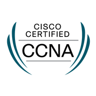

Cisco Certified Network Associate
Issued by Cisco
Issued: October 2026
Demonstrates knowledge of network fundamentals, network access, IP connectivity, IP services, security fundamentals and automation.
Verify Certification ↗I believe continuous learning and professional development are essential in the ever-evolving world of technology.

Issued by Cisco
Issued: October 2026
Demonstrates knowledge of network fundamentals, network access, IP connectivity, IP services, security fundamentals and automation.
Verify Certification ↗